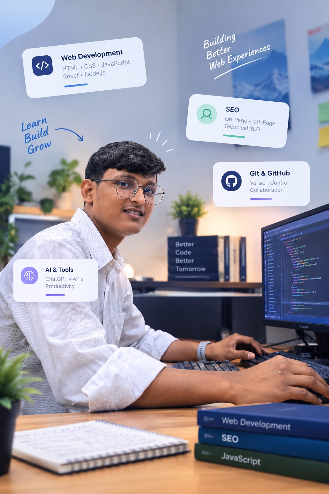

Build first, then optimize
I'd rather ship something small and real, then improve it with data, than plan forever.
SEO taught me how the web actually works underneath. Now I'm learning to build it myself, and I'm doing both on this very page.
A working mix of search-engine thinking and front-end code, the two halves I combine on every project.

Open to internships & freelance work
I'm a BCA student based in Jaipur, Rajasthan. From June 2025 to August 2026 I worked as an SEO Executive at Appco Software, spending over a year on hands-on on-page, off-page, technical and local SEO, optimizing real websites so they get found on Google.
Along the way I kept noticing the same thing: the best-performing sites weren't just well-optimized, they were well-built. That pulled me toward web development.
Now I'm learning HTML, CSS and JavaScript and applying the same SEO instincts to every page I build. This portfolio is the clearest proof: built by me, and optimized by me.
Anyone can write "SEO + Dev" on a portfolio. So I built a tool into it. The X-Ray reads this page's real HTML, right now in your browser, and shows what a search engine sees: the Google preview, heading structure, meta tags, structured data and images.
Same person, expanding skill set. Toggle to see the shift.
Web development is now my main focus. I am building a solid foundation in HTML5, CSS3 and JavaScript through hands-on projects, and I still do SEO alongside.
On-page, off-page, technical and local SEO across 22+ client websites. WordPress and Shopify content and product management.
Studying computer science fundamentals while learning web development independently alongside coursework.
Pick whatever's closest to you and I'll point you to the part of this site that fits best.
I'd rather ship something small and real, then improve it with data, than plan forever.
A site that looks great but loads slow or ranks nowhere isn't actually done. I care about both halves.
My Field Notes and GitHub commits are public on purpose: proof, not just claims.
Shankar Saini is an SEO Executive turned web developer based in Jaipur, Rajasthan, India. He is also a BCA student at Sikkim Alpine University.
He does on-page, off-page, technical and local SEO, and builds websites with HTML, CSS and JavaScript, so SEO is built in from the first line of code.
He is a BCA student teaching himself web development (HTML, CSS and JavaScript) as his main focus, while still doing some SEO. Before this he worked as an SEO Executive at Appco Software on 22+ client websites, from June 2025 to August 2026.
Shankar is based in Jaipur, Rajasthan, India.
Use the contact page, email shankarsaini8107@gmail.com, or message him on LinkedIn.